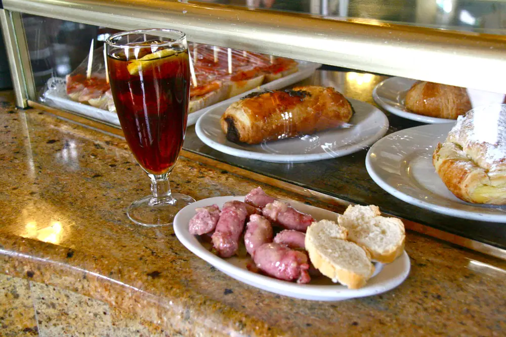
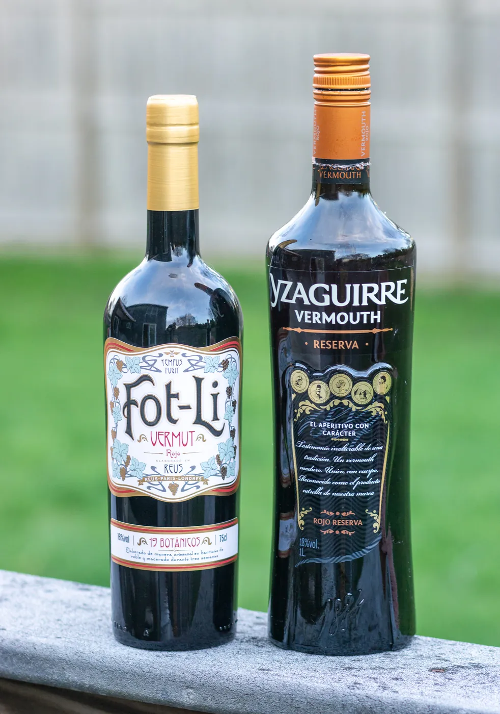
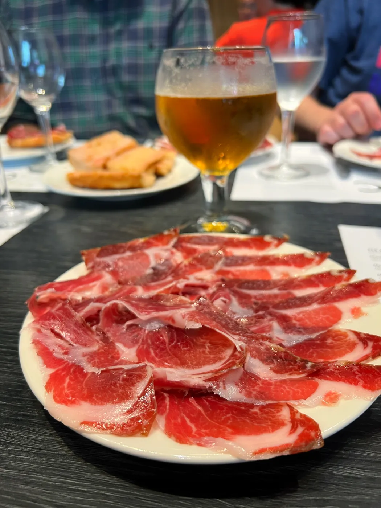

01
El vermut de la casa
Macerado, reposado y servido a temperatura de barra. Sin filtro de Instagram, sin floritura. La copa siempre con su rodaja, su aceituna y su sifón si lo pides.
Una bodega del Clot que abre temprano, cierra cuando hay que cerrar y trata a cada cliente como si fuera de la familia. Jamón, embutidos, tapas honestas y el vermut de la casa que muchos dicen que es de los mejores de Barcelona.

Macerado, reposado y servido a temperatura de barra. Sin filtro de Instagram, sin floritura. La copa siempre con su rodaja, su aceituna y su sifón si lo pides.
Bellota cuando llega el bueno, ibérico cuando toca. Lo cortamos delante, lonchas finas, en plato blanco. Pan con tomate al lado, sin más.
Fuet, butifarra negra, llonganissa de Vic, sobrasada de Mallorca. De proveedores que conocemos por nombre. Si un día no hay del bueno, no servimos.

Precios orientativos. La carta cambia con lo que llega del mercado y la temporada.

Aquí entra el del taller, el de la finca de enfrente, el jubilado del segundo y el chaval que viene de paso. Y todos se conocen.
El Celler Panotxa lleva muchos años en el mismo sitio de Sant Joan de Malta. Por aquí han pasado tres generaciones de vecinos: los abuelos venían a tomar el vermut antes del mercado, los hijos pararon a comer un bocadillo después del trabajo, y los nietos vienen ahora a las once de la mañana a pegarse un vermut antes de subir a casa.
No tenemos televisor con fútbol todo el día. No servimos almuerzos modernos ni cócteles de autor. Lo que tenemos es lo que tenían los bares de antes: una barra de mármol, un cortador de jamón, un par de tablas siempre listas y la paciencia de escuchar al cliente.
Si vienes con prisa, mejor otro día. Si vienes a sentarte un rato, a pedir un vermut y a tirar de conversación con quien tengas al lado, estás en el sitio que buscas.
— El equipo del Panotxa
Para tomar el vermut en la barra no, se entra y se pide. Para comer sentado en sábado y domingo al mediodía sí es muy recomendable: somos un local pequeño y se llena. Llama y te lo apuntamos.
Servimos las dos cosas. El tapeo va todo el día: jamón, embutidos, tortilla, bocadillos, bravas. A mediodía hay platos del día (cocidos, guisos, escudella) según lo que prepare la cocina esa mañana. Pregunta al entrar.
Algunas: la tortilla de patata, el pan con tomate, las patatas bravas, las aceitunas y un par de ensaladas de temporada. No somos un sitio especializado en vegetariano, pero no salimos sin comer.
Aceptamos tarjeta sin problema, también Bizum. El efectivo no nos molesta, pero pagar con el móvil hoy en día es lo más cómodo.
No tenemos terraza propia. La calle es tranquila y en verano se saca alguna mesa, pero lo bonito es la barra: largo de mármol, cortador de jamón a la vista y los embutidos colgando. Esa es la postal del Panotxa.
El Panotxa abre temprano y no hace falta avisar para tomar un vermut. Para comer sentado, mejor llamar. Y si vienes en grupo, mucho mejor avisar antes — el local es pequeño y cabemos los que cabemos.
Esto era una demo
Esta web era una muestra de lo que podríamos hacer para Celler Panotxa. Si te ha gustado y quieres una para tu negocio, escríbenos — Pedro te responde personalmente y la web final la adaptamos al 100% a tu gusto.
Pedro Núñez · Impacto Digital